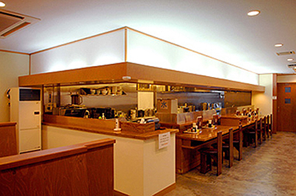

<!DOCTYPE HTML>
<html>
   <head>
      <title>musashi</title>
      <meta charset="UTF-8">
      <link rel="stylesheet" href="mise.css" >
   </head>
<body>
  <div id="wrapper">
    <div id="header">
          <a href="index.html"></a>
    </div> 
    <div id="main-navi">
          <ul>
               <li><a href="index.html">ホーム</a></li>
               <li><a href="kodawari.html">こだわり</a></li>
               <li><a href="mise.html">お店紹介</a></li>
               <li><a href="menu.html">メニュー</a></li>
               <li><a href="syoukuninn.html">職人紹介</a></li>
               <li><a href="sinnnenn.html">信念</a></li>
         </ul>  
    </div>  
    <div id="main-feature">
            
    </div>
    <div id="main-features">
         <h1>お店紹介</h1>
            <div class="main-left">
                        <a href="https://www.google.com.tw/maps/place/9-ch%C5%8Dme-1-28+Kitag%C5%8D+5+J%C5%8D,+Shiroishi-ku,+Sapporo,+Hokkaido+003-0835%E6%97%A5%E6%9C%AC/@43.0570364,141.4268213,17z/data=!3m1!4b1!4m5!3m4!1s0x5f0b2b8cbf7f202f:0x98010aeb859e8b13!8m2!3d43.0570364!4d141.42901/"target="_blank"></a>  
            </div>
            <div class="main-middle">
                        <ul>
                            <li>住&nbsp;&nbsp;&nbsp;&nbsp;&nbsp;&nbsp;&nbsp;&nbsp;&nbsp;所</li>
                            <li>電&nbsp;&nbsp;&nbsp;&nbsp;&nbsp;&nbsp;&nbsp;&nbsp;&nbsp;話</li>
                            <li>営&nbsp;業&nbsp;時&nbsp;間<br>&nbsp;<br>&nbsp;<br></li>
                            <li>定&nbsp;&nbsp;&nbsp;休&nbsp;&nbsp;&nbsp;日</li>
                            <li>席&nbsp;&nbsp;&nbsp;&nbsp;&nbsp;&nbsp;&nbsp;&nbsp;&nbsp;数<br>&nbsp;</li>
                            <li>駐&nbsp;&nbsp;&nbsp;車&nbsp;&nbsp;&nbsp;場</li>
                            <li>ア&nbsp;ク&nbsp;セ&nbsp;ス</li>
                        </ul>
            </div>
            <div class="main-right">
                        <ul>
                            <li>札幌市白石区北郷5条9丁目1-28 </li>
                            <li>011-871-6341</li>
                            <li>昼の部 11:00～16:00<br>
                                夜の部 17:00～22:00<br>
                                ラストオーダー 30分前<br></li>
                            <li>水曜日 </li>
                            <li>カウンター席 9席<br>
                                テーブル席 6人×2卓 4人×1卓</li>
                            <li>店舗前15台</li>
                            <li>1.JR「白石」駅よりタクシーで約10分<br>
                                2.地下鉄東西線「白石」駅よりタクシーで約15分<br>
                                3.地下鉄東西線「白石」駅又は、JR「白石」駅より、
                                中央バス川下線[白24]乗車後、北郷4条9丁目停留所下車徒歩1分</li>
                       </ul>           
            </div> 
            <div class="bottom-box1"> 
                 <p>店内</p>  
                
            </div>
            <div class="bottom-box2">
                 <p>カウンター席</p>
                  
            </div>
            <div class="bottom-box1"> 
                 <p>テーブル席 4人掛け</p>
                   
            </div>
            <div class="bottom-box2">
                 <p>テーブル席 6人掛け</p>   
                 
            </div>
            <div class="footer-box1">
                        <iframe width="920" height="600" frameborder="0" scrolling="no" marginheight="0" marginwidth="0" src="http://maps.google.co.jp/maps/ms?msa=0&amp;msid=204722550801665493333.0004a6316f3c7d432b80d&amp;hl=ja&amp;brcurrent=3,0x5f0b2aa7df93b6b9:0xf9fd462b7b0a228d,0&amp;ie=UTF8&amp;ll=43.085439,141.430607&amp;spn=0.075222,0.135441&amp;z=13&amp;iwloc=0004a63172d1a78058a47&amp;output=embed"></iframe>
            </div>
  </div>               
    <div id="second-feature">
         <div class="box1">
              <ul>
                  <li><a href="index.html">►&nbsp;&nbsp;ホーム</a></li>
                  <li><a href="kodawari.html">►&nbsp;&nbsp;こだわり</a></li>
                  <li><a href="mise.html">►&nbsp;&nbsp;お店紹介</a></li>
              </ul>
         </div>
    <div class="box1">
              <ul>
                  <li><a href="menu.html">►&nbsp;&nbsp;メニュー</a></li>      
                  <li><a href="syoukuninn.html">►&nbsp;&nbsp;職人紹介</a></li>
                  <li><a href="sinnnenn.html">►&nbsp;&nbsp;信念</a></li>
              </ul>
     </div> 
      <div class="box2">
                 <p>札幌市白石区北郷5条9丁目1-28（札幌ラーメン 武蔵 本店）<br>
                    T&nbsp;E&nbsp;L&nbsp;&nbsp;&nbsp;&nbsp;&nbsp;&nbsp;&nbsp;&nbsp;&nbsp;&nbsp;011-871-6341<br>
                    営業時間&nbsp;&nbsp;&nbsp;&nbsp;&nbsp;昼の部 11:00～16:00/
                    夜の部 17:00～22:00<br>
                    店休日&nbsp;&nbsp;&nbsp;&nbsp;&nbsp;&nbsp;&nbsp;&nbsp;水曜日</p>
      </div> 
</div>
      <div id="footer">
                <p>Copyright ©2019 musashi All Rights Reserved.</p>
      </div>      
</div>  
</body>
</html>      
  